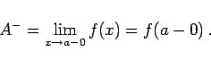
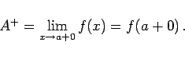
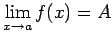
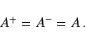
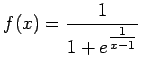
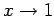
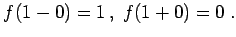

Inhalt Index DeskTop Bronstein

 Funktionen und ihre Darstellung Funktionsbegriff Grenzwert von Funktionen
Funktionen und ihre Darstellung Funktionsbegriff Grenzwert von Funktionen


Eine Funktion f(x) hat an der Stelle x=a den linksseitigen Grenzwert A-, wenn sie sich bei zunehmenden, unbegrenzt der Zahl a nähernden x-Werten unbegrenzt dem Wert A- nähert:
|  | (2.19a) |
In Analogie dazu besitzt eine Funktion den rechtsseitigen Grenzwert A+, wenn sie sich bei abnehmenden, sich unbegrenzt der Zahl a nähernden x-Werten unbegrenzt dem Wert A+ nähert:
|  | (2.19b) |
Die Schreibweise  verlangt, daß der links- und rechtsseitige Grenzwert übereinstimmen:
|  | (2.19c) |
| Beispiel |
|
Die Funktion  geht für  gegen verschiedene Grenzwerte von links und von rechts:  |